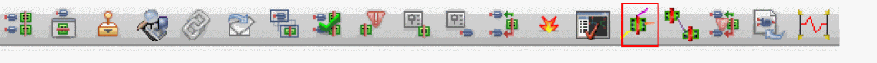

Showing Incomplete Nets in Postselection Mode
You can also start the Show/Hide Selected Incomplete Nets command with nothing preselected in the canvas. When you then click an object, the function shows the incomplete nets associated with that object. To do this:
-
With nothing selected in the layout canvas, click the Show/Hide Selected Incomplete Nets button in the Layout XL toolbar.
You are prompted to click in the canvas to show the incomplete nets for the selected object. -
Click an object in the canvas.
The function shows all the open markers for the incomplete nets associated with the object you selected.
In this mode, if you can see an object in the canvas, you can show the incomplete nets for that object regardless of whether it is set to be selectable in the Palette assistant. -
Use
Shift-click to add another object to the selected set.
The function adds the incomplete nets associated with the object you just selected to the existing set of incomplete nets on display. -
Use
Ctrl-click to remove an object from the selected set.
The function hides the incomplete nets associated with the object you clicked on.
You can achieve the same effect by clicking a second time immediately after you have clicked to show the nets in step 2 above. -
Press
hon your keyboard to hide all the incomplete nets currently displayed in the design canvas.
You can restore the visibility of those incomplete nets by pressinghagain. -
To end the Show/Hide Selected Incomplete Nets function, do one of the following.
When you leave the function, the incomplete nets are deselected but remain highlighted in the canvas.
Showing Incomplete Nets for Overlapping Objects
When you click an area of the canvas where several objects overlap, the function gets the list of objects under the cursor that have incomplete nets associated with them, hides any visible incomplete nets that are directly under the cursor, and shows the incomplete nets for the first object in the list. When you click again, the function hides the incomplete nets for the first object and shows the incomplete nets for the second object, and so on. To see all the incomplete nets associated with a group of overlapping objects, press Shift and click the left mouse button repeatedly until all the objects under the cursor are selected.
Showing Incomplete Nets Using Area Selection
You can use area selection to select the objects for which you want to see incomplete nets.
Only objects that are fully enclosed by the selected area are considered. For example, if an area selection encloses an instance pin but not the instance itself, the function shows (or hides) only those incomplete nets associated with the corresponding instance terminal and excludes any other incomplete nets associated with the instance.
The same applies for objects inside a group. If the selected area fully encloses an object inside a group but not the group itself, the function shows (or hides) only the incomplete nets associated with the fully-enclosed object.
Showing Incomplete Nets in the Navigator and Search Assistants
The Show/Hide Selected Incomplete Nets command can be called from both, Navigator and the Search assistants. When you select an object in either assistant, you see the incomplete nets associated with the selected object. When you deselect the object, the incomplete nets are hidden again. To hide all the incomplete nets, click an empty area in the Navigator assistant.
If you select one or more incomplete net markers in the Annotation Browser assistant, you can click the right mouse button and choose Select Nets to select the nets in the layout canvas and Navigator assistant. You can then invoke the router on the selected nets.
Related Topics
Behavior by Object Type in Postselection Mode of Incomplete Nets
Showing Incomplete Nets in Preselection Mode
Return to top